首屏测速
数据胜于雄辩
录像
该方式，大致的思路，是通过录像的方式，获取整个操作的过程，然后通过序列帧数据（首屏加载完成的时间节点减去触发加载的时间节点）得出本次首屏加载时间耗时。实现方式也有很多种，以下介绍其中两种：
- 通过高速摄像机，记录下整个操作和页面展示过程
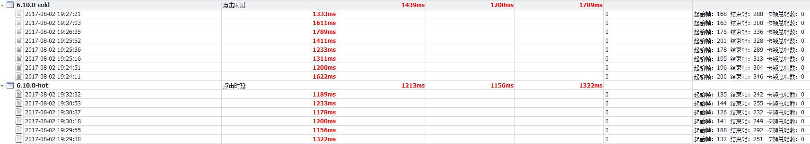
大致数据展示如上，具体的操作就不详述了。
- 如果是移动端的话，通过adb命令实现
- 运行
adb shell screenrecord --bugreport /sdcard/lanch.mp4命令进行录屏 - 录制完毕，
ctrl+c结束录屏 - 运行
adb pull /sdcard/lanch.mp4 ./，把其下载到本地 - 打开视频，左上角有每一帧的时间和帧数
- 接下来的操作，应该就不言而喻了
- 运行
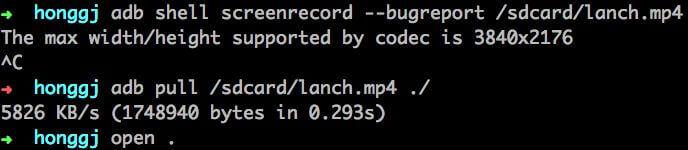
视频截图如下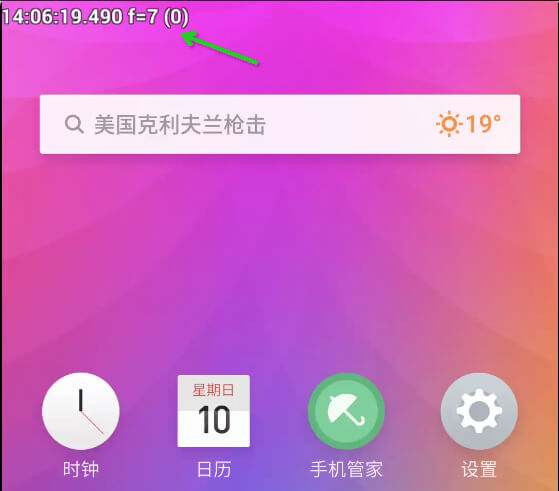
chrome开发者工具
- 打开chrome开发者工具，切换到
Performance - 点击图中录制按钮（蓝色箭头指向的按钮）开始录制
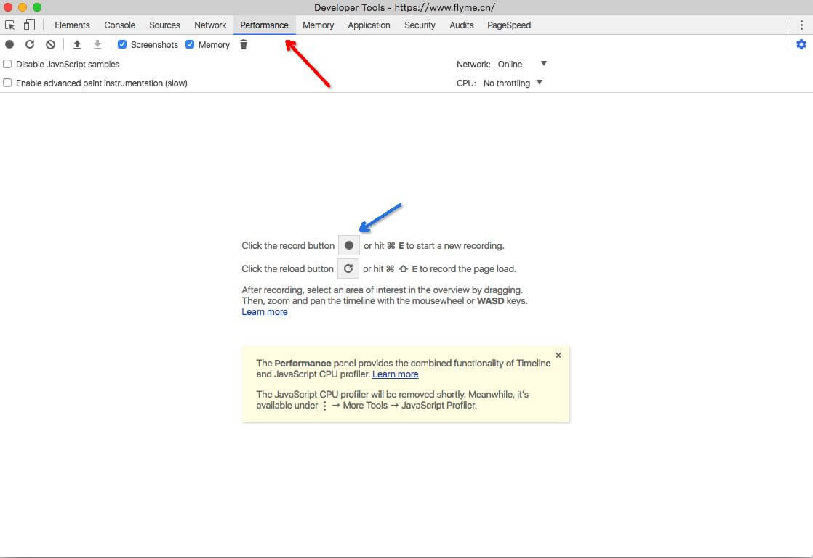
- 刷新页面（使用快捷键即可）
- 等页面加载完毕后，点击停止按钮（红色箭头指向的stop按钮）停止录制
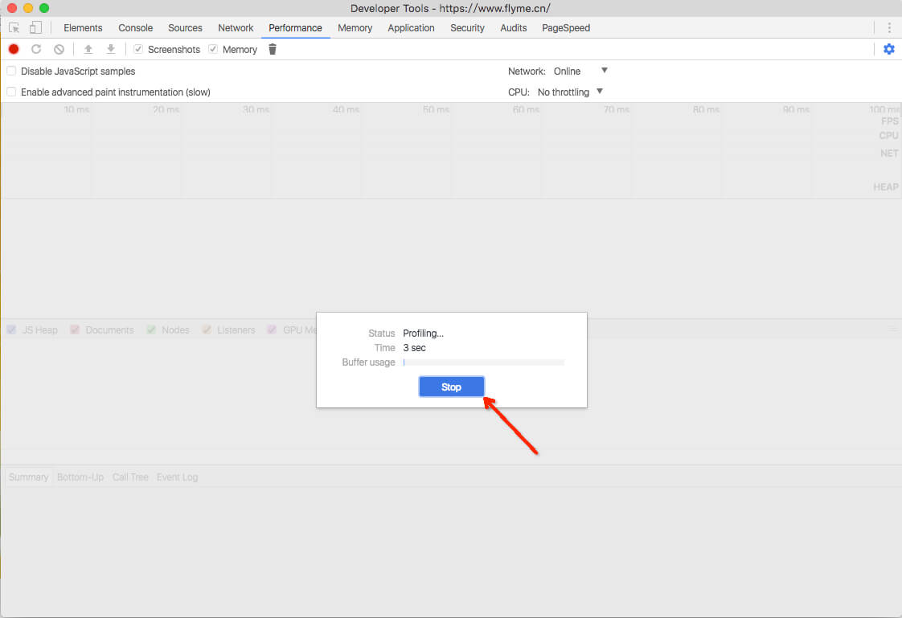
- 根据自己的需要调整区间（根据你对首屏加载完成的定义进行调整，全部展示完成、关键区域渲染完成之类的）
- 图中第二个红色框框的时间节点差值，便是首屏加载耗时
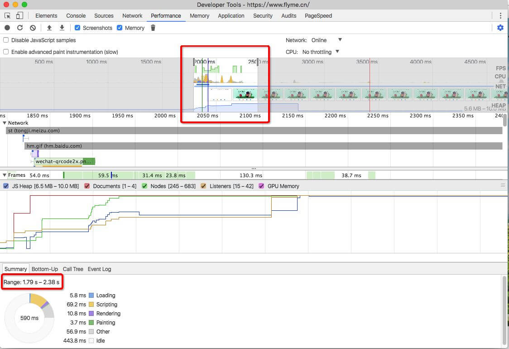
- 很多时候你想测的是首次渲染耗时，那么可以先清除缓存数据，再进行上面所讲的操作。点击下图中红色箭头指向的按钮
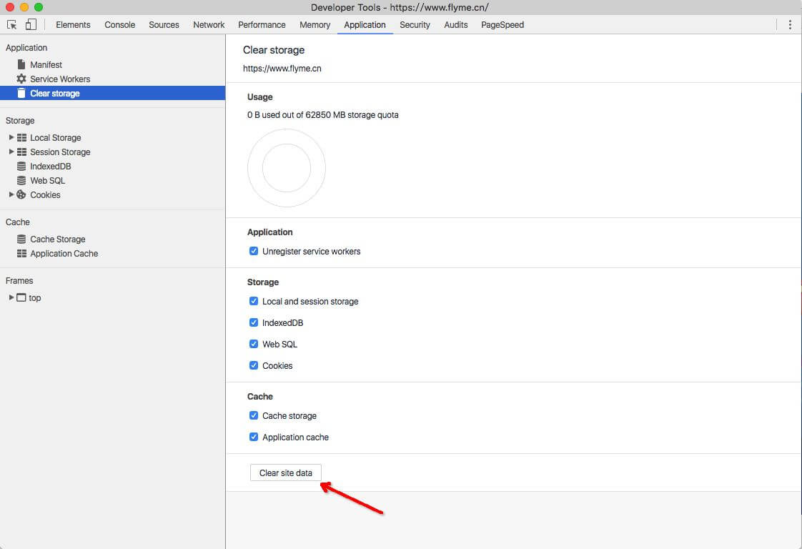
window.performance
window.performance是W3C性能小组引入的新的API，通过这个全局对象，我们可以获取整个页面加载流程的关键时间节点。具体的就不讲了（相信不懂的话，你自己会上网去查的，哈哈），看看下面的列子。
javascript:(function(window){"use strict";window.timing=window.timing||{getTimes:function(opts){var performance=window.performance||window.webkitPerformance||window.msPerformance||window.mozPerformance;if(performance===undefined){console.log("Unfortunately, your browser does not support the Navigation Timing API");return}var timing=performance.timing;var api={};opts=opts||{};if(timing){if(opts&&!opts.simple){for(var k in timing){if(timing.hasOwnProperty(k)){api[k]=timing[k]}}}if(api.firstPaint===undefined){var firstPaint=0;if(window.chrome&&window.chrome.loadTimes){firstPaint=window.chrome.loadTimes().firstPaintTime*1e3;api.firstPaintTime=firstPaint-window.chrome.loadTimes().startLoadTime*1e3}else if(typeof window.performance.timing.msFirstPaint==="number"){firstPaint=window.performance.timing.msFirstPaint;api.firstPaintTime=firstPaint-window.performance.timing.navigationStart}if(opts&&!opts.simple){api.firstPaint=firstPaint}}api.loadTime=timing.loadEventEnd-timing.navigationStart;api.domReadyTime=timing.domComplete-timing.domInteractive;api.readyStart=timing.fetchStart-timing.navigationStart;api.redirectTime=timing.redirectEnd-timing.redirectStart;api.appcacheTime=timing.domainLookupStart-timing.fetchStart;api.unloadEventTime=timing.unloadEventEnd-timing.unloadEventStart;api.lookupDomainTime=timing.domainLookupEnd-timing.domainLookupStart;api.connectTime=timing.connectEnd-timing.connectStart;api.requestTime=timing.responseEnd-timing.requestStart;api.initDomTreeTime=timing.domInteractive-timing.responseEnd;api.loadEventTime=timing.loadEventEnd-timing.loadEventStart}return api},printTable:function(opts){var table={};var data=this.getTimes(opts);Object.keys(data).sort().forEach(function(k){table[k]={ms:data[k],s:+(data[k]/1e3).toFixed(2)}});console.table(table)},printSimpleTable:function(){this.printTable({simple:true})}};return window.timing.printSimpleTable()})(this);
把上面代码复制到chrome浏览器控制台运行，下图红色框框对应的，便是从页面开始加载到前端onload事件响应的耗时
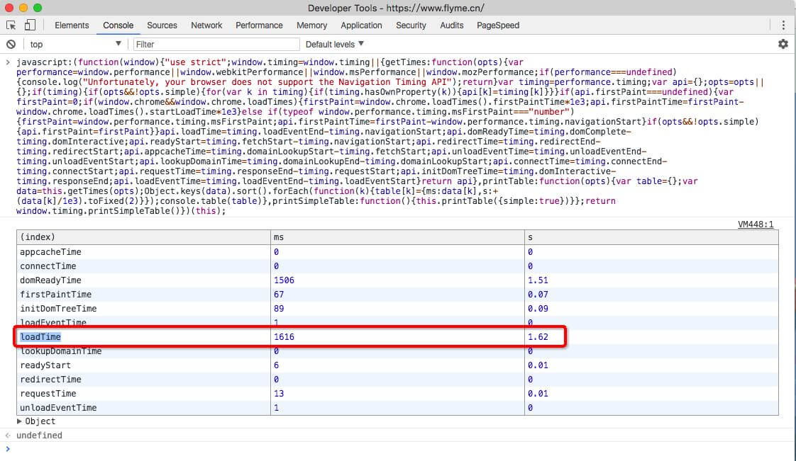
该方式，还有另外一个好处，便是，你可以依此，搭建前端监控体系。
第三方工具
- http://tool.chinaz.com/speedtest
用于获取dom文件网络请求速度（仅仅是请求耗时，不包括渲染等）
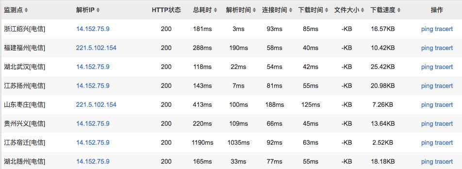
https://developers.google.com/speed/pagespeed/insights/
- 看到
google.com，大家应该就猜到要翻墙了吧 - 结果大致如下图，包括了pc和移动端
- 首次内容绘制 (FCP) 用于衡量用户何时看到来自相应网页的可见响应。所用时间越短，留住用户的可能性就越大
- 档内容加载 (DCL) 用于衡量何时完成 HTML 文档的加载和解析。研究表明，所用时间越短，跳出率越低
- 谷歌商店中有对应的插件，可供下载（使用更方便一些，而且还可结合开发者工具一起使用）
- 看到
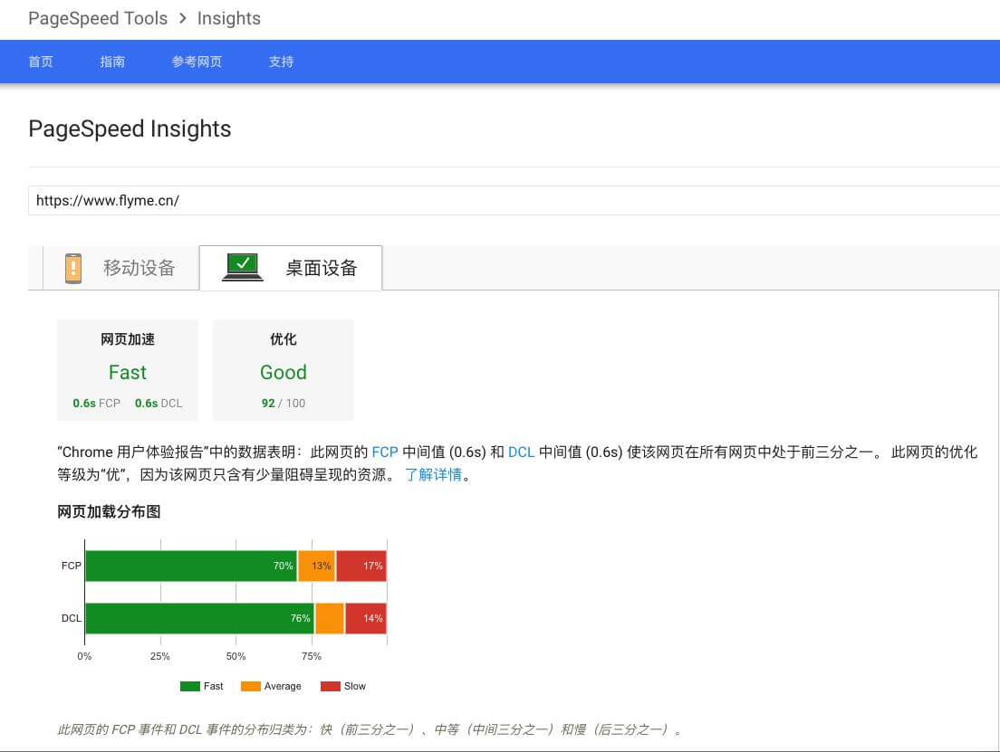
- http://www.mmtrix.com/evaluate/applist
该第三方平台偶尔有广告，自行决定是否使用，结果还是比较详细的，见下图
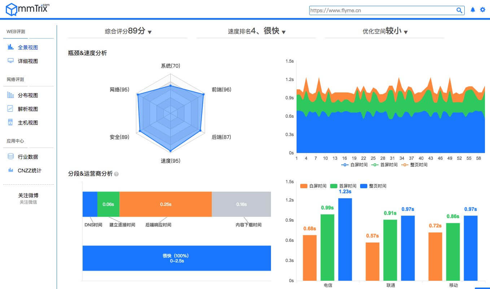
当然，以上介绍的平台，均属于第三方，可能存在一些不可预想到的情况，请读者自行定夺。 例如，笔者2014年的时候，用了百度的一个在线测速功能，现在就已经找不到了（或者说改版了）。顺便发个图，纪念一下。
所以同样也不能保障，上述网站后续能一直正常访问和使用。
总结
前端首屏加载和渲染，是一个比较复杂的过程，以上方式，并不能覆盖所有的项目和各种各样的实现方式，需要读者根据不同的情况，灵活运用。